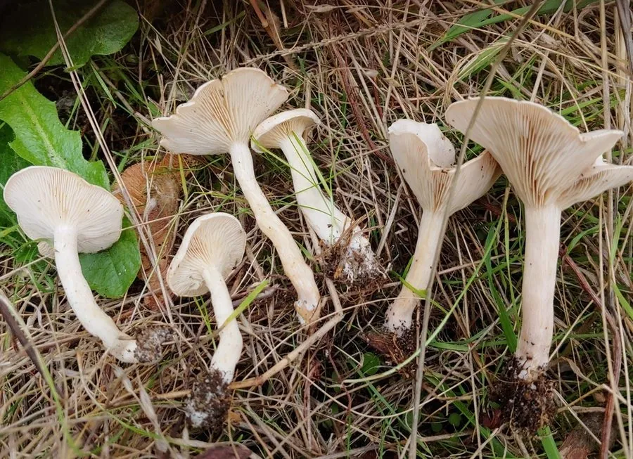

真菌 · 真菌界
白霜杯伞 Clitocybe dealbata

口蘑科小型蘑菇，菌盖白色、覆白霜，含毒蕈碱，是著名的剧毒菌，误食可致出汗、流涎、呼吸困难。
- 分类
- 门担子菌门纲伞菌纲目伞菌目科口蘑科属杯伞属
- 栖息环境
- 草地、牧场与林缘，夏秋成群发生，可形成仙女环
- 地理分布
- 北半球温带草地广布，中国北方、欧洲、北美均有记录
- 保护级别
- 暂无评估；草地生境下种群稳定
物种志
白霜杯伞的子实体小型，菌盖直径 2–5 厘米，初期凸起，后平展至中央下凹呈杯状，表面白色至象牙白，常覆一层白霜状粉粒，边缘内卷并具细条纹。菌肉白色，薄，气味微弱带粉味。菌褶白色至淡乳白，密集，直生至延生。菌柄长 2–4 厘米，直径 0.3–0.8 厘米，白色，纤维质。孢子印白色。
白霜杯伞生于草地、林缘与牧场，夏秋成群发生，常形成仙女环。它含有高浓度毒蕈碱，属剧毒菌：误食后 15–60 分钟出现流涎、出汗、流泪、瞳孔缩小、腹痛腹泻，严重时呼吸困难、心率减慢，可危及生命。因其白色小伞的外形与可食的香杯伞、马厩蘑菇、甚至某些口蘑相似，是欧美蘑菇中毒的常见元凶，切不可凭“白色小蘑菇”采食。
形态与习性
- 菌盖直径 2–5 厘米，白色覆白霜，中央下凹成杯状
- 菌柄长 2–4 厘米，白色，纤维质
- 孢子印白色，孢子椭圆形
- 生境草地、牧场与林缘，夏秋成仙女环
- 毒性含高浓度毒蕈碱，属剧毒菌，禁止食用
- 中毒表现流涎、出汗、瞳孔缩小、呼吸困难
趣味知识
- 白霜杯伞是欧美蘑菇中毒的常见元凶，白色小伞外形极易被误认为可食菌。
- 它的毒素是毒蕈碱，作用于副交感神经，典型症状是流涎、出汗、流泪、瞳孔缩小。
- 中毒潜伏期仅 15–60 分钟，严重时出现呼吸困难与心率减慢，需立即就医。
- 在草地上成圈生长的“仙女环”，常常就是它和近缘种组成的。